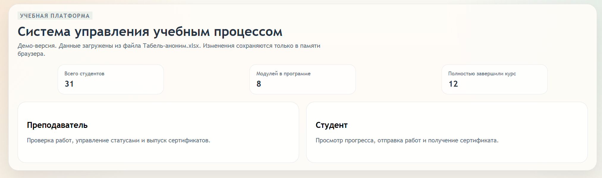
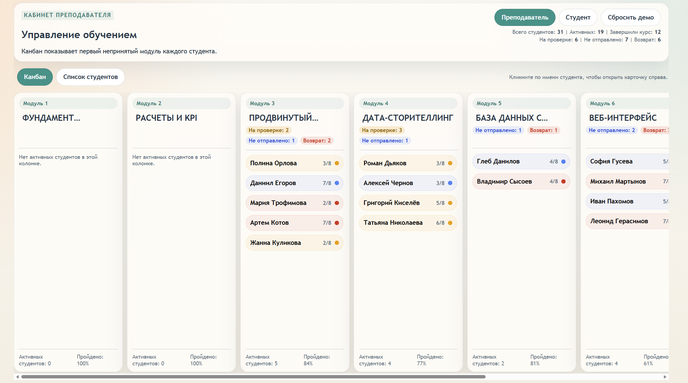
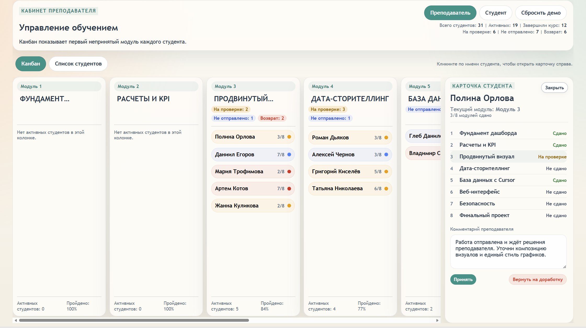
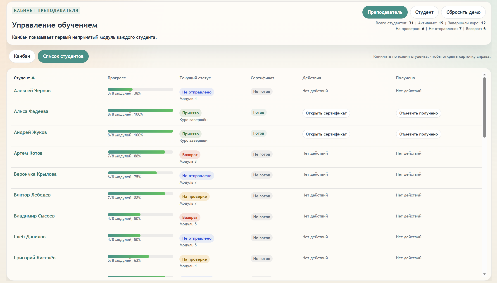
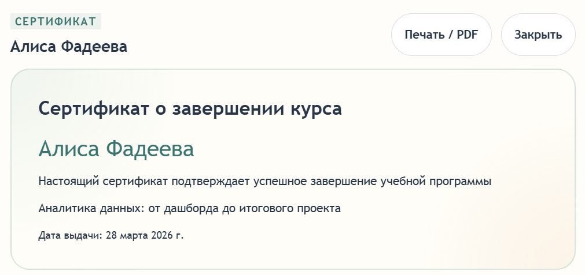
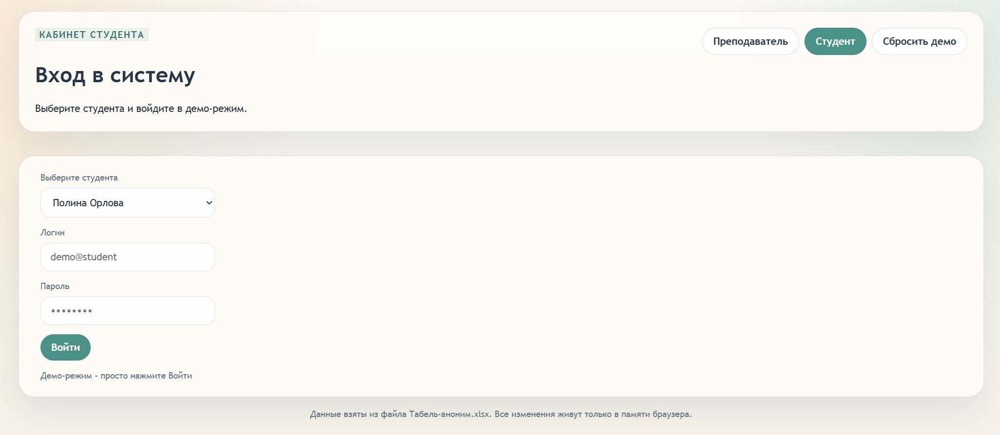
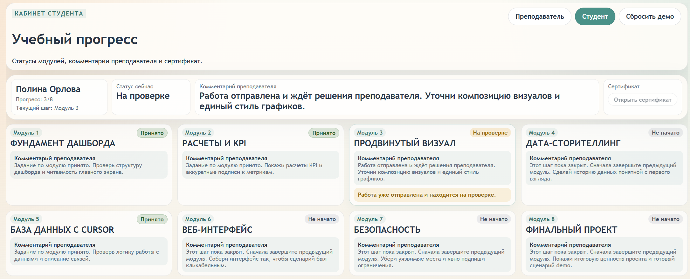

LMS Demo - веб-интерфейс для Excel
Задача
Показать, как можно превратить Excel-таблицу с обучением студентов в понятный веб-интерфейс
для преподавателя и студента без разработки backend.
Основная проблема: данные есть, но ими неудобно управлять и обсуждать внутри команды.
Зачем это нужно
Проект показывает, как можно быстро превратить Excel-табель в рабочий интерфейс без полноценной разработки системы.
Вместо передачи файлов и объяснений “на словах”:
можно дать ссылку и показать процесс в виде интерфейса.
Это упрощает обсуждение, проверку логики и ускоряет принятие решений.
Как использовать демо
1. Откройте демо по ссылке ниже
2. Переключайтесь между режимами «Преподаватель» и «Студент»
3. В режиме преподавателя - откройте карточку студента и попробуйте действия
4. В режиме студента - посмотрите прогресс и комментарии
1. Главная страница
Выбор режима: преподаватель или студент.

2. Кабинет преподавателя
Канбан по модулям. Видно статус каждого студента.

Карточка студента с деталями и действиями.

3. Список студентов
Таблица с прогрессом, статусами и сертификатами.

4. Сертификат
Формирование сертификата по завершению курса.

5. Кабинет студента
Логин в систему.

Просмотр прогресса и комментариев преподавателя.
